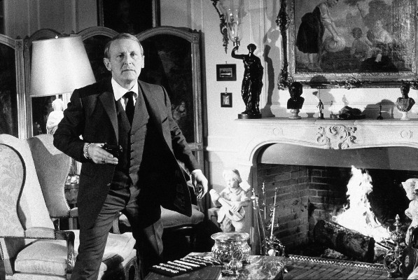
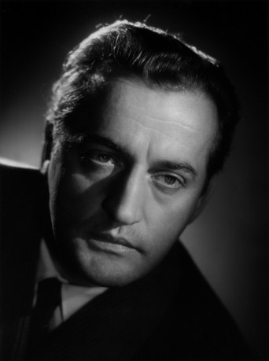
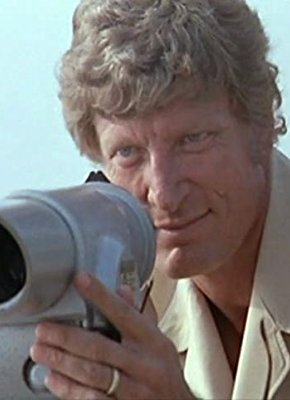
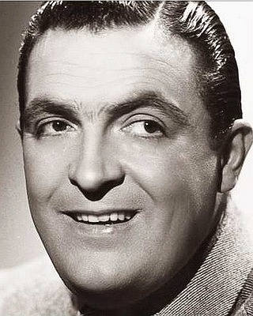

#3947 Die Große Sause
Alternativ: Don't Look Now... We're Being Shot At! (Englischer Titel)


 IMDB-Wertung: 8.0 / 10
IMDB-Wertung: 8.0 / 10  Metascore: 0
Metascore: 0 
Mitten im Zweiten Weltkrieg, als Paris von den Nazis besetzt ist, wird ein englisches Flugzeug über der französischen Metropole abgeschossen. Die drei Insassen konnten sich mit dem Fasllschirm retten, sind aber nun auf der Flucht vor den Deutschen, die sie suchen und gefangennehmen wollen. Zum Glück sind die Franzosen auf der Seite der Briten, daher helfen unter anderem der Maler Augustin und der Dirigent Stanislas den Gestrandeten – und gemeinsam wollen sie die Flucht aus der besetzten Stadt schaffen.
Jahr: 1966
Dauer: 124 Minuten
FSK: 6
Land: Frankreich Studio: Constantin FilmTonspuren:
Untertitel: Deutsch,
Auflösung: 1080p (1920x816) Größe: 12800 MB
Genre: Komödie, Krieg
Regisseur: Gérard Oury
Drehbuch: Yann Brion
Soundtrack:
Darsteller:
-  Bourvil als Augustin Bouvet
 Louis de Funès als Stanislas Lefort
Louis de Funès als Stanislas Lefort- Marie Dubois als Juliette
- Terry-Thomas als Sir Reginald
 Claudio Brook als Peter Cunningham
Claudio Brook als Peter Cunningham- Andréa Parisy als Soeur Marie-Odile / Sister Marie-Odile
- Colette Brosset als Germaine
- Mike Marshall als Alan MacIntosh
- Mary Marquet als Mère Supérieure
- Pierre Bertin als Le grand-père de Juliette - propriétaire du guignol
- Benno Sterzenbach als Major Achbach
 Sieghardt Rupp als Lt. Stuermer
Sieghardt Rupp als Lt. Stuermer-  Reinhard Kolldehoff als Un caporal allemand
- Helmuth Schneider als L'officier allemand dans le train
 Paul Préboist als Le pêcheur
Paul Préboist als Le pêcheur-  Hans Meyer als Officer S.S. Otto Weber
- Guy Grosso als Un bassonniste
 Michel Modo als Soldat allemand qui louche
Michel Modo als Soldat allemand qui louche- Peter Jacob als
- Rudy Lenoir als Un officier allemand
- Noël Darzal als Lucien
- Pierre Roussel als Le voisin de Peter au wagon-restaurant
- Pierre Bastien als Plombin
- Jacques Sablon als
- Mag-Avril als La vieille locataire
- Jacques Bodoin als Méphisto
- Gabriel Gobin als Le machiniste résistant de l'opéra
- Paul Mercey als L'homme des bains turcs
-  Henri Génès als L'employé du zoo
- Nicolas Bang als John - le bombardier , uncredited
- Anne Berger als Marguerite dans 'Faust' , uncredited
- George Birt als Harry - le mitrailleur , uncredited
- Guy Bonnafoux als L'employé aux bains turc / Un officier allemand , uncredited
- Christian Brocard als Un joueur à la gare , uncredited
- Jerry Brouer als Un soldat allemand , uncredited
- Georges-Fréderic Dehlen als Un colonel allemand , uncredited
- Jean Droze als Un joueur de basson , uncredited
- Alice Field als La prostituée , uncredited
- Fred Fischer als Un colonel Allemand , uncredited
- Guy Fox als Le gros bonhomme , uncredited
 Yvonne Gradelet als Une religieuse , uncredited
Yvonne Gradelet als Une religieuse , uncredited- Rémy Julienne als Le motard qui prend la citrouille , uncredited
- Jean Landret als Le guide à Chaillot , uncredited
- Catherine Marshall als Une religieuse / Nun , uncredited
- Clément Michu als Un employé à la gare , uncredited
- Jean Minisini als Un soldat allemand , uncredited
- Raymond Pierson als Un soldat allemand , uncredited
- Edouard Pignon als Un figurant à l'opéra , uncredited
- Jean-Pierre Posier als Patrick - le mécanicien , uncredited
- Percival Russel als Le soldat allemand assommé , uncredited
Datei: X:\Person\Louis de Funès\Große Sause, Die (1966, FSK6, 1920x816).mkv seit 05.07.2016
Festplatte: HD Collection-7+mehr(A-Z)+Person
 Es gibt insgesamt 33 Filme in der Gruppe 'Person\Louis de Funès'
Es gibt insgesamt 33 Filme in der Gruppe 'Person\Louis de Funès'